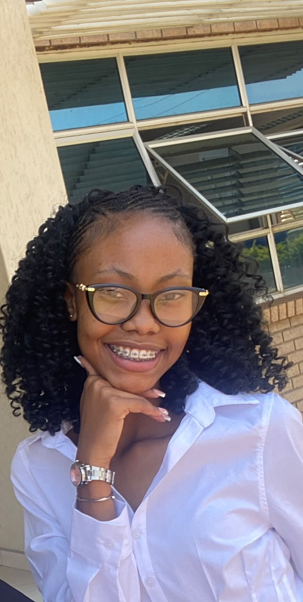

Home | About Me
Welcome to My Portfolio
Hello, and welcome. Wame Viola Lesokola here, and I am a Year 1 student pursuing a BSc in Computer Systems Engineering at the Botswana Accountancy college.

Wame Viola Lesokola · CSE, Year 1
Academic Background and Interests
I am passionate about computers, how they work and how to manipulate them. Computers make me feel like a God who can dictate anything on a canvas through code. They allow me to model my world anyhow.
Professional Objective
My goal is to secure an industrial attachment or internship where I can apply my academic knowledge, enhance my technical skills and contribute meaningfully to a dynamic organisation. I am eager to learn, adaptable to new environments and ready to bring a strong work ethic to a professional team.
From the journal
Notes from my first year
Reflections on learning, teamwork and the habits that keep me going.
Reflecting on My Academic Journey
Transitioning into tertiary education at SCIS has been a transformative experience. Looking back on my first semester, I have realised that university is not only about acquiring technical knowledge.
Read the post →Group Dynamics and Collaboration
Working in a group this semester on the Communication and Study Skills presentation was an eye-opening experience. It taught me that effective teamwork goes far beyond simply dividing tasks.
Read the post →Study Tips & Resources
These are some of the strategies and tools that have helped me succeed in my first year, from the Pomodoro Technique to active recall and time blocking.
Read the post →Everything in one place